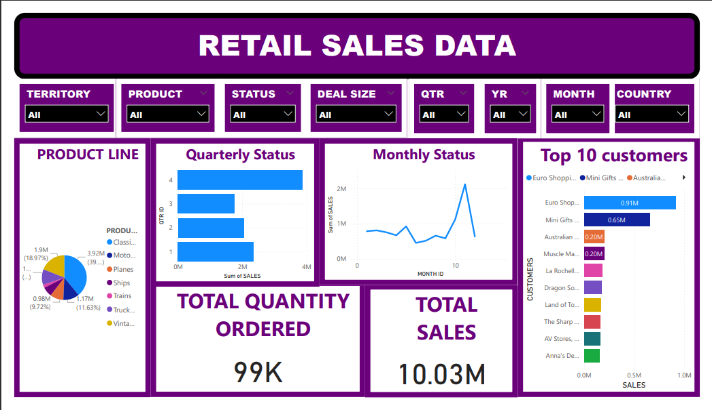

Technical Report on Retail Sales Data
By
OTUENE, Hephzibah Reginald
Introduction
The Retail Sales dataset, is available on Kaggle. It provides a comprehensive view of sales transactions over 2 years, including variables such as order number, quantity ordered, price each, order line number, sales, order date, order time, status, quarter id, month id, year id, product line, MSRP, product code, customer name, phone, address line 1, address line 2, city, state, postal code, county, territory, contact last name, contact first name, Deal size. This report aims to present initial insights from a preliminary examination of the dataset and suggest potential areas for further analysis.
Detailed Observation
-
Monthly Sales Trend
- January: $785.87k - Sales started relatively strong.
- February: $810.44k - Slight increase from January.
- March: $754.50k - A minor decline compared to February.
- April: $669.39k - Continued downward trend.
- May: $923.97k - Significant increase, the highest in the first half of the year.
- June: $454.76k - Sharp decline, lowest sales figure for the year.
- July: $514.88k - Moderate recovery from June.
- August: $659.31k - Continued recovery.
- September: $584.72k - Slight decrease from August.
- October: $1.12m - Substantial increase, highest sales since May.
- November: $2.12m - Dramatic spike, highest monthly sales for the year.
- December: $634.68k - Decrease from November but an improvement from the mid-year slump.
Quarterly Sales Trend
- Q1 (January - March): $2.35m - Solid performance.
- Q2 (April - June): $2.05m - Decline from Q1, impacted by lower sales in April and June.
- Q3 (July - September): $1.76m - Further decline, with the lowest quarterly performance.
- Q4 (October - December): $3.87m - Strong recovery and the highest quarterly sales, driven by peaks in October and November.
Product Line Performance
- Classic Cars: $3.92m - The highest performing product line.
- Vintage Cars: $1.90m - Second highest after classic cars.
- Motorcycles: $1.17m - Moderate performance.
- Trucks and Buses: $1.13m - Similar to motorcycles in performance.
- Planes: $975.00k - Reasonable performance.
- Ships: $714.44k - Lower performance.
- Trains: $226.24k - The lowest performing product line.
Yearly Sales Trend
- 2003: $3.52m - Baseline year.
- 2004: $4.72m - Significant increase, indicating growth.
- 2005: $1.79m (only includes Q1 and Q2) - Sharp decline compared to previous years, but this figure only accounts for the first half of the year.
The monthly sales figures over the years demonstrate significant fluctuations:
The data indicates significant volatility in monthly sales, with notable peaks in May, October, and November.
Analyzing the data on a quarterly basis provides a clearer view of broader trends:
Quarterly data reveals a strong end-of-year performance following a mid-year slump.
Performance across different product lines varies significantly:
Classic cars dominate the sales, followed by vintage cars, while trains lag significantly.
A look at the yearly sales trend over three years shows significant variation:
The data highlights robust growth from 2003 to 2004, followed by a dramatic decrease in the first half of 2005, pointing to potential market or operational challenges that need to be investigated.
Summary
The analysis indicates a highly volatile sales environment, with a significant variation monthly and quarterly. Classic cars are their most valuable and sought-after product line, while trains sell poorly. Yearly data suggests that while there was strong growth from 2003 to 2004, the first half of 2005 saw a substantial downturn, highlighting areas for potential investigation and strategic adjustment.
Visualization
Here is a basic visualization supporting my observation:
Review and Submission
This technical report provides an initial glance at the Retail Sales Data, with suggested areas for further exploration to enhance business strategies and performance.
You can access the dataset and further details from Kaggle Sample sales data